MODERN WEB
HTML5 — CSS3 — Javascript
İçerik
- Sunucu-İstemci mimarisi
- HTML
- CSS
- JavaScript
- jQuery
- Diğer teknolojiler
- Örnek uygulamalar
- Kapanış
Eskiden...
Her işi sunucu yapardı...
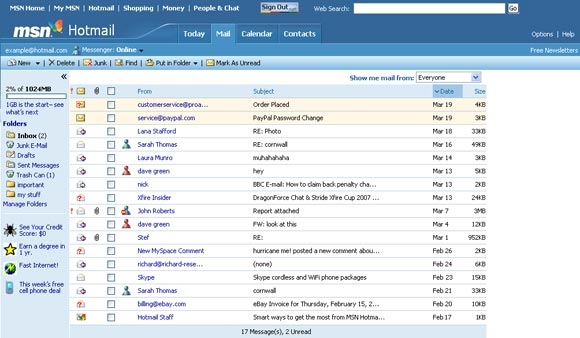Tarayıcının tek görevi önüne geleni göstermekti...
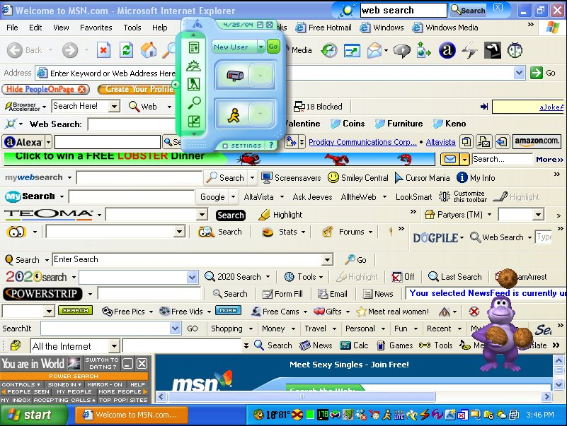Bazen işler yolunda gitmezdi...
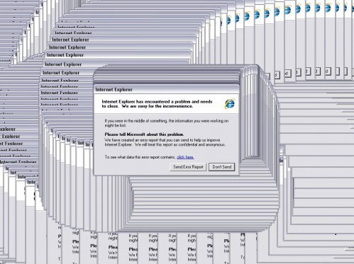Her yerde hareketli gif'ler vardı...


Şimdi...
Siteler artık dinamik ve akıcı.

Tarayıcılar güçlü.
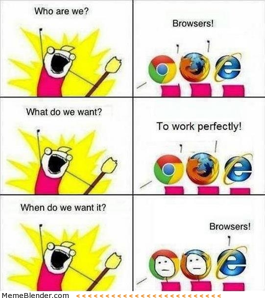Kullanıcı deneyimi önemli.
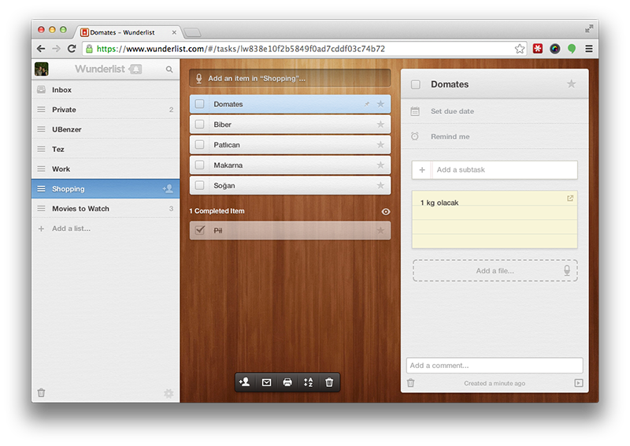Nasıl oluyor bu site işi?
Sunucu İstemci Mimarisi

Görsel: http://demosthenes.info/
Frontend vs. Backend
- Web "sayfası"
- Tüm ağırlık sunucuda
- Tarayıcı "dummy" bir renderer
- Web "uygulaması"
- Ağırlık istemcide
- Sunucular veri işleme ve saklama işi ağırlıklı
Backend Time vs. Frontend Time (1)

Kaynak: stevesouders.com
Backend Time vs. Frontend Time (2)
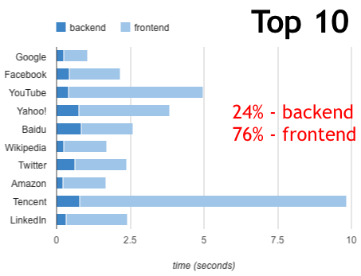Kaynak: stevesouders.com
JavaScript'li & JavaScript'siz
Frontend Engineering
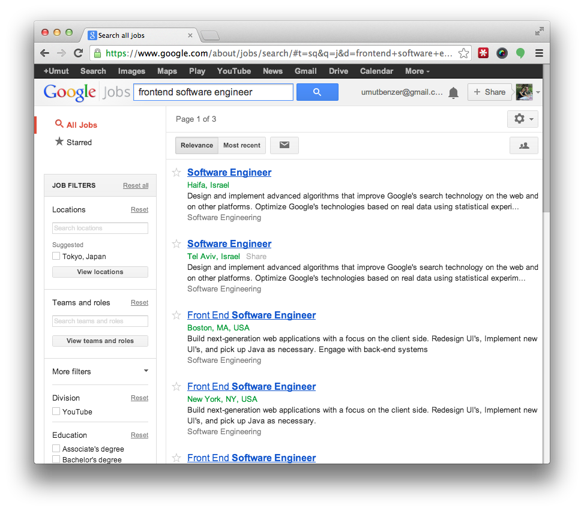Bir web sayfasının anatomisi
Site = HTML + CSS + JavaScript
| HTML: | Yapı + İçerik |
| CSS: | Görünüş |
| JS: | Dinamik bileşenler / uygulama |
HTML
- Sayfanın genel yapısını oluşturur.
- İçerik burada yer alır.
- Paragraflar, tablolar, fotoğraflar, ses, video vb.
HTML — Örnek
CSS
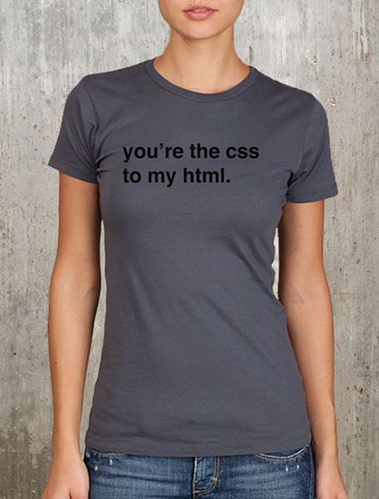Bir CSS Kuralı...

Örnek
html, body {
background: #364B66;
font-family: Helvetica, Arial, Sans;
}
body {
color: #333333;
}
#header {
padding: 10px 0;
}
img { border: 1px black; }
.special {
color: red;
}
.special:hover {
color: blue;
}
CSS'siz
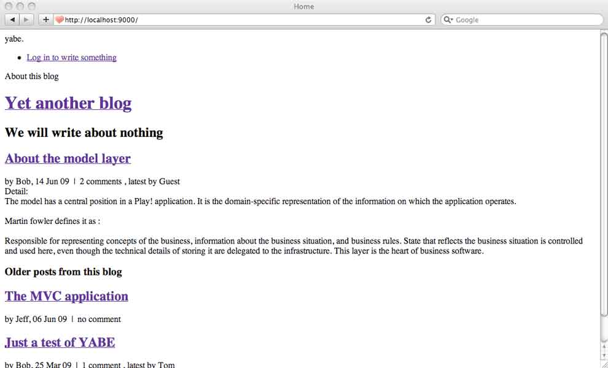CSS'li
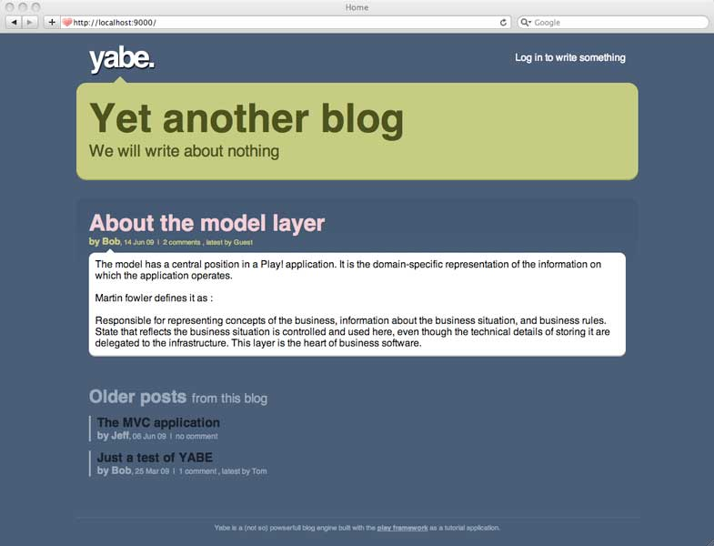Daha çılgın selectorler...
p strong {
color: red;
}
div#special.test.test2 > span {
font-size: 50px;
}
span:hover {
font-weight: bold;
}
<div id="special" class="test2 test">
<span>
The span
<span>The inner span!</span>
</span>
<p>The p<strong>Strong inside p</strong></p>
</div>
CSS Nasıl kullanılır?
<p style="color:red">Some red text.</p>
<head>
<style type="text/css">
p { color: blue; }
</style>
</head>
<head>
<link rel="stylesheet" type="text/css" href="style.css">
</head>
JavaScript
JavaScript — Nasıl kullanılır?
HTML içinde
<html>
<head>
<script>
alert("I am a JavaScript!");
</script>
</head>
<body>
<p>I am a P</p>
<script>
alert("I am a JS in body!");
</script>
</body>
</html>
Ayrı dosya ile
<script src="javascript.js"></script>
JavaScript — Değişkenler & Veri tipleri
Tanımlama
var info;Veri Tipleri
var aString = "Bu bir stringtir."; /* Tek ya da çift tırnak olabilir. */
var aNumber = 12; /* Bu bir sayıdır */
var aBoolean = true;
var anUndefined; /* Bu değersizdir. */
var anotherUndefined = undefined;
var aNull = null; /* Değerinin olmaması bir değerdir. */
JavaScript — Diziler
var anEmptyArray = [];
var cars = ['Dacia', 'Renault', 'Opel'];
console.debug(cars[0]); /* Dacia */
cars[0] = 'Nissan';
cars.length; /* 3 */
cars.push('Honda');
animals.pop(); /* returns Honda */
JavaScript — Veri Tipleri ve Eşitlik
var one = 1; /* Number 1 */
var oneS = "1"; /* String 1 */
one == oneS /* true */ /* çok sakat! */
one === oneS /* false */
one != oneS /* false */ /* çok sakat! */
one !== oneS /* true */
JavaScript — Fonksiyonlar
var sayHello = function(name) { alert("Hello " + name); };
var sayHi = function(name) { alert("Hi " + name); };
var myFunction2 = sayHello;
myFunction2(name); /* Hello Umut. */
myFunction2 = sayHi;
myFunction2(name); /* Hi Umut. */
JavaScript — İç içe fonksiyonlar
Dıştaki değişkenler, içeride kullanılabilir.
var user = "umut";
var setAlarm = function(message, timeout) {
handle = function() {
console.log("Şimdi " + user + "uyandırılacak...");
console.log(message);
};
setTimeout(handle, timeout);
}
setAlarm("Uyan kardeş sabah oldu!", 100);
// handle() Erişilemez.
Daha fazlası için: http://www.adequatelygood.com/JavaScript-Scoping-and-Hoisting.html ve http://howtonode.org/why-use-closure
JavaScript — Nesneler
var myObject = {
myProperty: 'hello i am string',
aNumberProperty: 12,
anInnerObject: {
innerOne: "a",
innerTwo: function(param) { console.debug("Param is " + param); }
},
myMethod: function() {
console.log(this);
return this;
}
}
myObject.myProperty;
myObject['myProperty'];
myObject.myMethod();
delete myObject.myProperty;
myObject.theNewOne = "Hello, I am new!";
Document Object Model
JavaScript'in HTML ile buluştuğu yer...
- HTML'in JavaScript üzerindeki yansıması olarak düşünülebilir.
- Bir ağaç şeklindedir.
- Web sayfası üzerinde DOM aracılığıyla değişiklik yapılabilir.
- DOM, tarayıcı tarafından sağlanır.

JavaScript ile DOM'a erişmek ve DOM'u modifiye etmek için bazı nesneler vardır:
window, document...
<div class="mySpecialClass">Div 1</div>
<div id="myId" class="mySpecialClass">Div 2</div>
var item = document.getById('myId');
item.style.color = 'red';
document.getElementsByClassName('mySpecialClass');
/* Bu Internet Explorer 8'de çalışmaz. */
Cross Browser
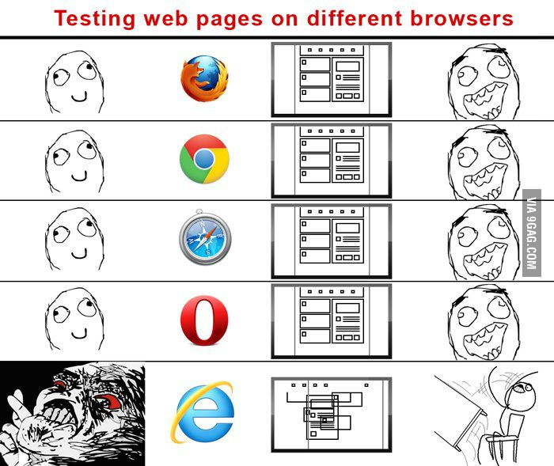Cross Browser — Sıkıntılar
- Sunulan özellikler ve kullanım yöntemleri tarayıcılar arasında değişkenlik gösterir.* özellikle eski tarayıcılarda
- Kodda farklı tarayıcılar için bir çok if then else görülmeye başlanır.
- Uygulama yazmak tarayıcılarla savaşmak haline gelir.
var xmlhttp;
if (window.XMLHttpRequest) {
/* IE7+ and others */
xmlhttp = new XMLHttpRequest();
} else {
/* IE6 */
xmlhttp = new ActiveXObject("Microsoft.XMLHTTP");
}

jQuery nedir?
Bir JavaScript kütüphanesidir.
- Cross browser fonksiyonlar
- Güçlü selectorler
- Kolay kullanım
- Güçlü event handling
jQuery — Cross Browser
<div class="mySpecialClass">Div 1</div>
<div class="mySpecialClass">Div 2</div>
Bunu...
var mySpecials = document.getElementsByClassName('mySpecialClass');
for(var i=0; i<mySpecials.length; i++) {
mySpecials[i].style.color = 'red';
}
/*
Developed by Robert Nyman, http://www.robertnyman.com
Code/licensing: http://code.google.com/p/getelementsbyclassname/
*/
var getElementsByClassName = function (className, tag, elm){
if (document.getElementsByClassName) {
getElementsByClassName = function (className, tag, elm) {
elm = elm || document;
var elements = elm.getElementsByClassName(className),
nodeName = (tag)? new RegExp("\\b" + tag + "\\b", "i") : null,
returnElements = [],
current;
for(var i=0, il=elements.length; i<il; i+=1){
current = elements[i];
if(!nodeName || nodeName.test(current.nodeName)) {
returnElements.push(current);
}
}
return returnElements;
};
}
else if (document.evaluate) {
getElementsByClassName = function (className, tag, elm) {
tag = tag || "*";
elm = elm || document;
var classes = className.split(" "),
classesToCheck = "",
xhtmlNamespace = "http://www.w3.org/1999/xhtml",
namespaceResolver = (document.documentElement.namespaceURI === xhtmlNamespace)? xhtmlNamespace : null,
returnElements = [],
elements,
node;
for(var j=0, jl=classes.length; j<jl; j+=1){
classesToCheck += "[contains(concat(' ', @class, ' '), ' " + classes[j] + " ')]";
}
try {
elements = document.evaluate(".//" + tag + classesToCheck, elm, namespaceResolver, 0, null);
}
catch (e) {
elements = document.evaluate(".//" + tag + classesToCheck, elm, null, 0, null);
}
while ((node = elements.iterateNext())) {
returnElements.push(node);
}
return returnElements;
};
}
else {
getElementsByClassName = function (className, tag, elm) {
tag = tag || "*";
elm = elm || document;
var classes = className.split(" "),
classesToCheck = [],
elements = (tag === "*" && elm.all)? elm.all : elm.getElementsByTagName(tag),
current,
returnElements = [],
match;
for(var k=0, kl=classes.length; k<kl; k+=1){
classesToCheck.push(new RegExp("(^|\\s)" + classes[k] + "(\\s|$)"));
}
for(var l=0, ll=elements.length; l<ll; l+=1){
current = elements[l];
match = false;
for(var m=0, ml=classesToCheck.length; m<ml; m+=1){
match = classesToCheck[m].test(current.className);
if (!match) {
break;
}
}
if (match) {
returnElements.push(current);
}
}
return returnElements;
};
}
return getElementsByClassName(className, tag, elm);
};
Buna dönüştürür.
$(".mySpecialClass").css("color","red");
jQuery — Güçlü Selectorler
var something = $("div")
.children("p.class1")
.find("h1.class2")
.filter(".class3")
.find("myHeader")
.parent()
.siblings("div.class3")
.find("*");
/* Amcasının oğlunun eltisinin kaynının dedesinin
komşusunun Ankara'daki kızının üçüncü kuzeni... */
jQuery — Kolay Kullanım
<img id="mainpicture" src="http://www.nokia.com/logo.png">
<div id="results">Sonuç bulunamadı.!</div>
<div>Sonuç mu? Ne sonucu? Sonuç ne arar la bazarda?</div>
var img = $('#mainpicture');
img.attr('src'); /* returns http://www.nokia.com/logo.png */
img.attr('src', 'http://www.microsoft.com/logo.png');
img.css('width');
img.css('width', '200px');
img.addClass("newlogo");
var resultDiv = $('#results');
resultDiv.html(); /* returns "Sonuç bulunamadı.!" */
resultDiv.html('12 sonuç bulundu.');
$("div").not(resultDiv).remove();
$('<div></div>')
.attr("id", "myPrecious")
.text("You shall not pass!")
.appendTo($(body));
jQuery — Event Handling (1)
click— Bir elemente tıklandı.mousemove— Mouse ile elementin üzerinde geziliyor.- Tüm Eventler
jQuery — Event Handling (2)
<div id="counter">not ready!</div>
<a id="increase" href="http://www.google.com/">Click me to increase</a>
$(document).ready(function() {
var counter = 0;
var counterDiv = $("#counter");
var increaseA = $("#increase");
counterDiv.text(counter);
increaseA.click(function(event) {
event.preventDefault();
counter++;
counterDiv.text(counter);
});
});
AJAX
Asynchronous JavaScript And XML
- Asenkron doğru, XML artık değil.
- Sayfayı yenilemeden sunucu ile bilgi alışverişi.
alert("submitting ajax");
$.ajax({
url: 'http://www.example.com/getUserList',
data: { count: 20, name: "Şeyda" },
success: function (data) {
/* { "users": [
{ "firstName": "Şeyda", "lastName": "Benzer" },
{ "firstName": "Şeyda", "lastName": "Bora" }
]} */
alert(data.users[0].firstName);
},
error: function(data) {
alert("Bir hata oluştu.");
}
});
alert("submitted ajax");
Angular.js nedir?
- Bir framework
- DOM ile JavaScript arasında iki yönlü veri alışverişi sağlar.
- Arayüz ile uygulama mantığı ayrı olmalıdır.
- Eventleri takip etme ve gerekli güncellemeleri yapma işini otomatize eder.
Başka bir sürü özellik de sunar tabi...
Gerçek hayattan JS/CSS3/HTML5 örnekleri...
- Bu sunum.
Gerçek zamanlı uygulamalar
- 3 boyutlu oyunlar
- MySpace (node.js)
- Google Maps